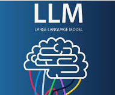

An LLM (Large Language Model) is a type of artificial intelligence designed to understand, process, and generate human language.
By analyzing massive datasets of text and code, it learns the statistical patterns of language to perform tasks like answering questions,
writing content, translating languages, and summarizing information.
LLMs operate on complex deep learning architectures called transformer neural networks. They are built in two main phases:Pre-training: The AI processes vast amounts of
internet data to learn the context and structure of language by predicting the next logical word (or "token") in a sequence.Post-training (Fine-Tuning):
The model is trained using human feedback and example conversations to adopt the persona of a helpful assistant rather than just mimicking the internet.
Common Use Cases include
--Content Creation: Drafting emails, writing essays, or generating computer code.
--Research & Analysis: Summarizing lengthy documents, identifying trends, and extracting key data points.
--Translation: Instantly converting text between languages with high contextual accuracy.
--Conversational AI: Powering intelligent chatbots for customer service and personal assistance.
Leading Models & Platforms You can access and experiment with these models through various public platforms, each offering different strengths in speed,
coding, and reasoning:
--OpenAI ChatGPT
--Google Gemini
--Anthropic Claude
--Meta AI
--Microsoft Copilot
Limitations & Considerations: While incredibly powerful, LLMs have inherent weaknesses. They are probabilistic engines that guess the next word rather
than "thinking," which means they can sometimes confidently produce factually incorrect information (known as a hallucination). Always fact-check outputs,
and be mindful of data privacy when entering sensitive personal or corporate information.